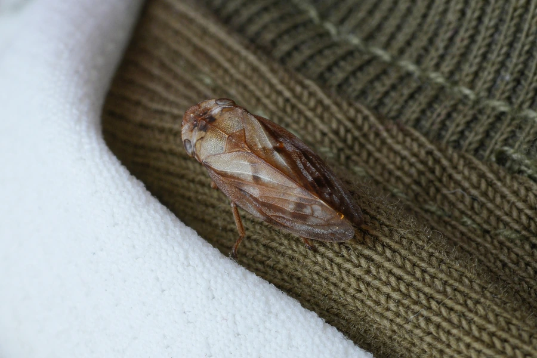

昆虫 · 动物界
松沫蝉 Aphrophora flavipes

常见于松树的沫蝉，若虫分泌白色泡沫团挂在松枝上，成虫灰褐色、善于跳跃，是松林里常见的小虫。
- 分类
- 门节肢动物门纲昆虫纲目半翅目科沫蝉科属尖胸沫蝉属
- 栖息环境
- 松林和混交林，若虫在松枝上分泌泡沫团生活
- 地理分布
- 东亚地区，中国北方和中部松林常见
- 保护级别
- 暂无评估
物种志
松沫蝉成虫体长 10–12 mm，体色灰褐或黄褐色，前翅上有斑纹，外形像一枚小树叶。若虫会分泌一团白色泡沫挂在松枝上，远远看去像棉花团或雪球。
松沫蝉分布于东亚，栖息于松林和混交林。它吸食松树汁液，若虫在泡沫团中生活，泡沫可以保护若虫免受干燥和天敌侵扰；成虫善于跳跃，受惊时迅速弹开。数量多时，松沫蝉的吸食会影响松树的生长，是松林害虫之一，但通常不会造成大面积危害。松沫蝉的泡沫团是野外观察昆虫的好线索，看到松枝上的白色泡沫团，往往就能找到藏在里面的若虫。目前它没有IUCN 的正式评估，中国未将其列入国家重点保护野生动物名录。
形态与习性
- 食性若虫和成虫吸食松树汁液
- 体长10–12 mm
- 泡沫团若虫分泌白色泡沫团挂在松枝上
- 栖息地松林和混交林
- 跳跃成虫善于跳跃，受惊时迅速弹开
- 危害数量多时吸食松树汁液，影响树木生长
趣味知识
- 松沫蝉的泡沫团像白色的小棉球挂在松枝上。
- 泡沫可保护若虫免受干燥和天敌侵扰。
- 松沫蝉的成虫跳跃能力很强，受惊时一下子就不见了。